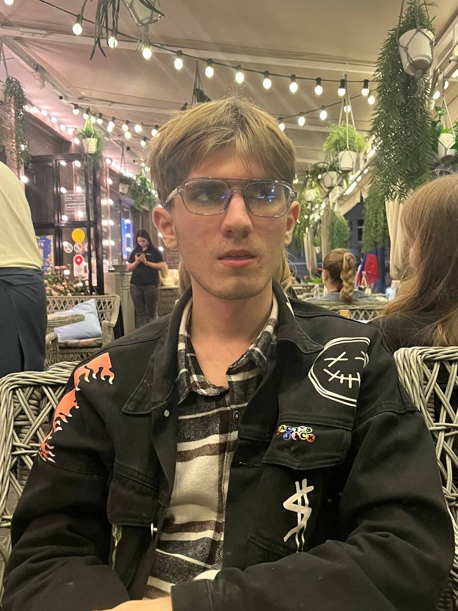

Меня зовут Мельников Максим, мне 20 лет, родился 5 июля 2006 года. Сейчас я студент третьего курса Южного федерального университета (ЮФУ), обучаюсь в Институте компьютерных технологий и информационной безопасности (ИКТИБ), направление — «Прикладная информатика». Живу в Ростове-на-Дону. Раньше жил в городе Каменск-Шахтинский Ростовской области, где окончил школу.
